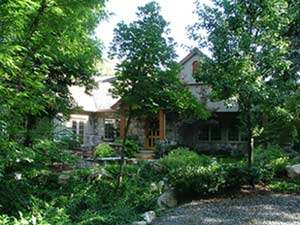
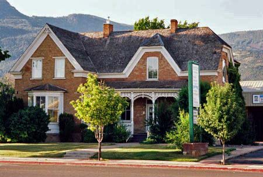

Salt Lake City Architect - Custom Home Design Utah - Craig Kitterman & Associates Architects
About Us
Craig Kitterman & Associates Architects, AIA, LEED Green Associate is a leading Salt Lake City architect firm providing full-service architectural solutions that harmonize aesthetics, functionality, and sustainability.
As a licensed architect in Utah for over 25 years, Craig Kitterman brings deep expertise in custom home design in Utah, timeless architecture, historic preservation, and sustainable architecture in Salt Lake City. Our team believes every project tells a story and reflects the unique vision of our clients, from Park City mountain retreats to Salt Lake Valley estates.
Education
Master of Architecture, University of Utah, 1978
Professional Associations and Memberships
Previous member, Historic Sandy Committee
Sandy City Planning Commission
We specialize in providing award winning
custom architectural services
for our clients.
Our Services Include:
- •Custom residential home design
(construction documents, renderings, 3D models) - •Green architecture / Sustainable architecture in Salt Lake City and Utah
- •Remodels, Renovations and Historical
- •Pool houses, cottages, and playhouses
-
•
In addition, we are affiliated with local professionals for:
- - Structural and Civil Engineering
- - Landscape design
- - Interior design
Custom Home Design Portfolio
Explore our portfolio of completed custom home designs and architectural projects across Utah
Interiors
These photos represent a small sample of our recent design portfolio. More photos and design details are available for review in our office.
Sustainable Architecture & Green Design

As a leading sustainable architecture practice in Salt Lake City, our focus is on better serving the needs of our clients through sustainable site planning, preservation, and building design. We are members of the AIA Sustainability Resource Center.
According to a recent whitepaper from the American Institute of Architects (AIA), buildings account for half of all greenhouse gas emissions. The building sector is the key source of demand for energy and materials that produce by-product greenhouse gases.
Sustainable design is becoming more and more important, and our clients in Salt Lake City and across Utah understand this importance. Most green buildings are high-quality buildings; they last longer, cost less to operate and maintain, and provide greater occupant satisfaction than standard development. The Federal, State and local government bodies have enacted policies and incentives for renewable energy systems as well. Financial incentives are available for sustainable architecture in Salt Lake City and throughout Utah.
Learn more about green architecture:
Historic Preservation

Craig Kitterman became actively involved in preserving the historic Joseph S Hunter House in Cedar City, Utah.
The home was originally built in 1866, and was placed on the National Historic Register in 1982. The home was scheduled to be demolished to make room for additional parking for a thrift store. Other pioneer homes had already been demolished, leaving the Hunter House as the oldest remaining pioneer home in Cedar City.
The Iron Mission State Park Foundation was created to save the historic home. With support from the community, the home was disassembled and moved across town to a new location at the Iron Mission State Park. It is now being reassembled.
Additional information about the Hunter House preservation:
Awards & Recognition
Our commitment to design excellence has been recognized by leading industry organizations
Craig Kitterman and Associates Architects has designed homes featured in the Parade of Homes (featuring homes in Salt Lake City, and Park City, Utah) and the Utah Valley Parade of Homes (featuring homes in Alpine, Utah). We have received numerous awards including:
Best of Show
Best Architectural Design
Best Master Suite
People's Choice
The television series "Hot Homes of Utah", which airs Sunday mornings on ABC, has featured homes designed by Craig Kitterman and Associates, and built by Markay Johnson.
We have been featured in magazine articles, including:
Utah Style & Design (Salt Lake Magazine)
Builder / Architect
Contact Us
Location
1079 E Murray-Holladay Rd
Salt Lake City, Utah 84117
Phone
801-270-8606
kittermanarchitect@gmail.com